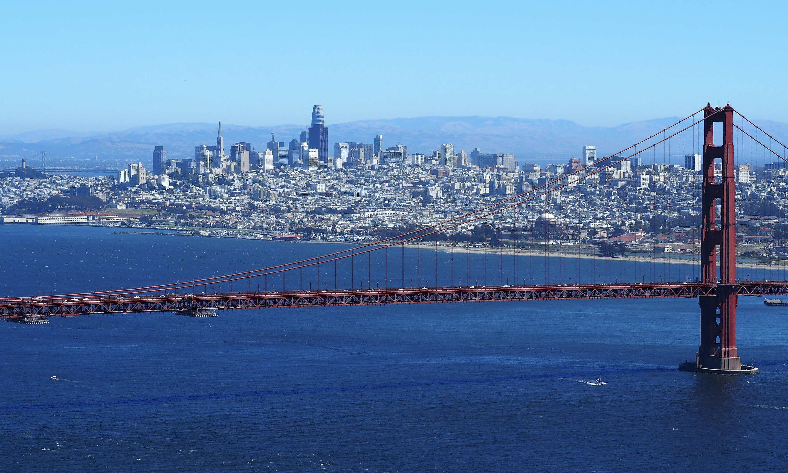

San Francisco - The City by the Bay
At a glance...
- Population: 873,965
- Incorporated: April 15, 1850
- Region: Bay Area
- Setting: Urban
- Median household income: $81,136
San Francisco, officially the City and County of San Francisco, is a commercial, financial, and cultural center in Northern California. With a population of 808,437 residents as of 2022, San Francisco is the fourth most populous city in the U.S. state of California behind Los Angeles, San Diego, and San Jose. The city covers a land area of 46.9 square miles (121 square kilometers) at the upper end of the San Francisco Peninsula, making it the second-most densely populated major U.S. city behind New York City and the fifth-most densely populated U.S. county, behind four of New York City's boroughs. Among the 92 U.S. cities proper with over 250,000 residents, San Francisco is ranked first by per capita income and sixth by aggregate income as of 2022.
Traveling to Sacramento
- By air:
- Sacramento International Airport (SMF)
- By land
- Interstate 80
- Interstate 405
- U.S. 90